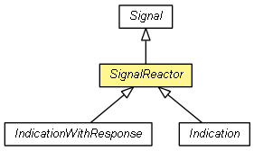

org.eclipse.net4j.signal
Class SignalReactor
java.lang.Object
 org.eclipse.net4j.signal.Signal
org.eclipse.net4j.signal.SignalReactor
org.eclipse.net4j.signal.Signal
org.eclipse.net4j.signal.SignalReactor
- All Implemented Interfaces:
- Runnable
- Direct Known Subclasses:
- Indication, IndicationWithResponse
public abstract class SignalReactor
- extends Signal

| Methods inherited from class org.eclipse.net4j.signal.Signal |
execute, finishInputStream, finishOutputStream, flush, getBufferInputStream, getBufferOutputStream, getCorrelationID, getCurrentInputStream, getCurrentOutputStream, getID, getName, getProtocol, run, toString, wrapInputStream, wrapOutputStream |
SignalReactor
public SignalReactor(SignalProtocol<?> protocol,
short id,
String name)
- Since:
- 2.0
SignalReactor
public SignalReactor(SignalProtocol<?> protocol,
short signalID)
- Since:
- 2.0
SignalReactor
public SignalReactor(SignalProtocol<?> protocol,
Enum<?> literal)
- Since:
- 2.0
Copyright (c) 2004 - 2011 Eike Stepper (Berlin, Germany) and others.